WkerCommon-Unshell 2020-01-12
常见的脱壳方式
首先我们使用PEID进行查壳
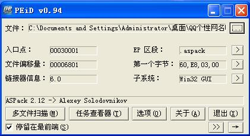
发现是：ASPack 2.12 -> Alexey Solodovnikov的壳，我们进行脱壳。
单步跟进
其实这个方法就是最直接的，我们直接单步跟踪，向上的跳转在下一步按F4，指导跟踪到大的jmp，这样的关键性标识也有popad，但是这个一般要在一开始的程序入口点是pushad这个寄存机，例如：
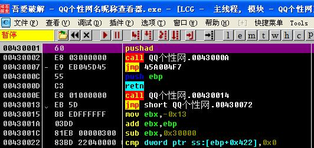
我们一直跟踪，跟到这个地方。
但是下面有个call，我们单步步过的话呢，发现程序运行起来了，我们需要跟进。
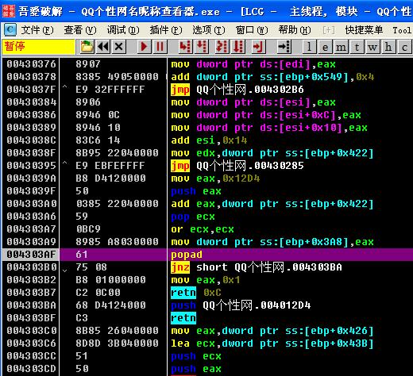
我们可以看到，我们运行到了popad，下面紧跟着跳转和retn，这个就很像了，我们继续运行。
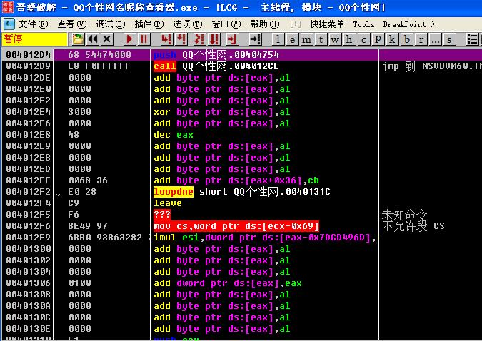
可以看到这个retn就跳转到了我们的OEP，但是要记住删除代码分析，这个是一个比较明显的VB程序，而且我们的代码段回到了RAV1000的位置，这个时候我们用插件Dump出来。
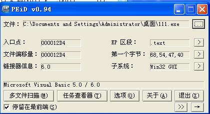
确实是一个VB的程序。
ESP定律
其实也就是ESP改变的时候我们下一个硬件断点，然后运行，ESP改变的时候程序暂停，我么单步跟下就可以了。
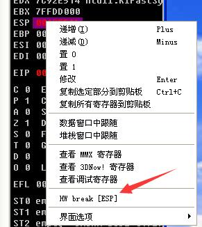
然后我们运行（删除硬件断点不要忘记），会来到这个位置：
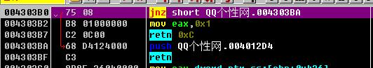
可以看到确实快到了，我们但不跟踪几下就可以了。
关键搜索
其实也就是搜索popad，记住不要搜索整个快，因为太大了，我们Ctrl+F进行搜索，会看到如下的结果：
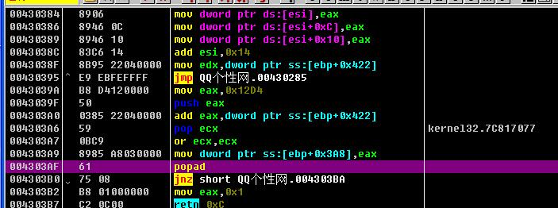
我们Ctrl+L就可以搜索下一个，记住一般来说，附近都有大的跳转和返回，一般也就是跨区段的跳转。
二次镜像法
首先我们对我们rsrc（资源）断下内存写入断点，这个就是进行解密，然后再对我们的code（代码）断进行下内存写入断点，这个样子就能到达我们的OEP了，具体操作如下：
点击M打开区段表。
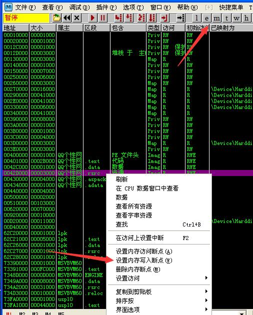
然后我们就会运行到这个位置：
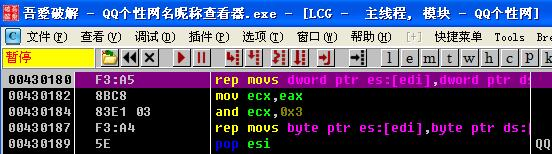
然后我们下我们code断点，然后运行。
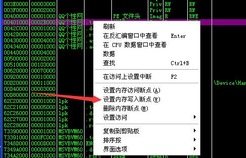
然后我们运行之后会运行到这个地方：
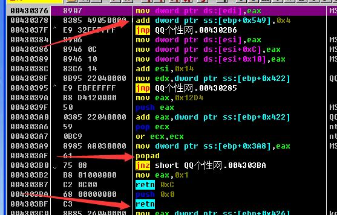
然后就到我们熟悉的地方了。
EIP跟踪法
这个方法之前就了解了，使用OD的TC指令进行表达式计算，主要是找到我们的壳的区间，然后使用tc eip<xxxxxxx，进行下端，tc这类的指令大家可以去看我的：
https://wker666.github.io/2020/01/12/OD-QuickKeyBoard/
其实也就是对制定跟踪直到eip的位置到达了：
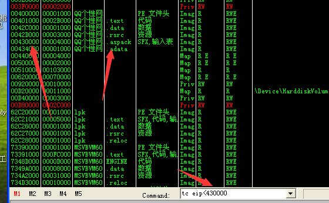
我们按下Enter，然后运行，他会很慢的运行。
（不总么会用，之后深究一下）
SFX跟踪法
通过OD给我们的SFX（暂时还不知道这是个什么，应该是有点异常的意思，之后会出相关的知识学习）进行跟踪
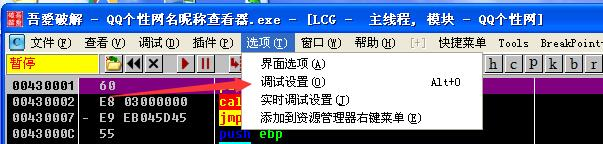
选择SFX，选择第二个选项（有点时候需要第三个，具体看情况）：
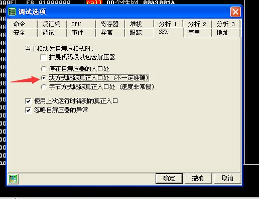
然后重新启动程序，就会直接到达OEP，但记住要调回来哦。
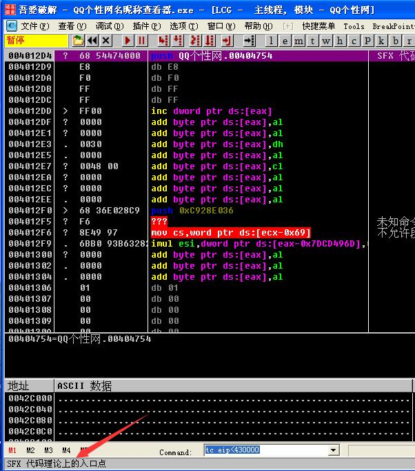
这是比较常见的一些脱壳技巧，之后还会更新。